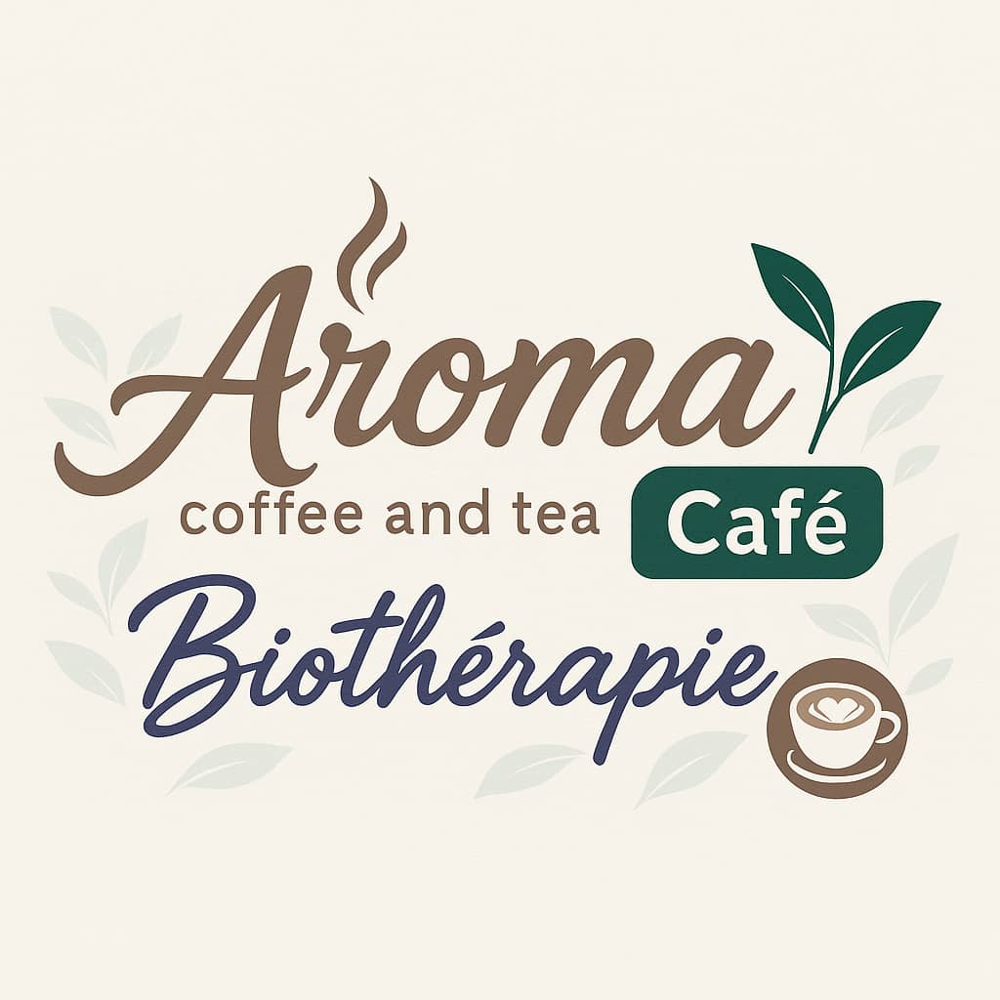

Vitalka +
Café bio & Eau minérale locale
Accueil
À propos
Contact
Bienvenue chez Aroma Café - Biothérapie
Des produits sains, naturels et bons pour la santé
Découvrez notre eau minérale locale : Vitalka +
Votre navigateur ne supporte pas la lecture de vidéos.
Nos cafés bio
☕ Café Bio Vitalité
☕ Café Bio Équilibre
☕ Café Bio Relaxant
☕ Café Bio Maigrizen